A small slice of the family registry — each part rotating around its primary axis.
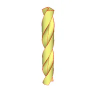
twisted_drill
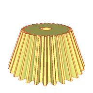
bevel_gear
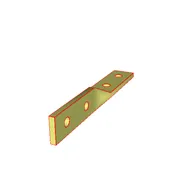
twisted_bracket
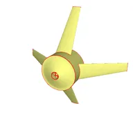
propeller
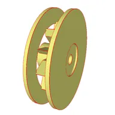
impeller
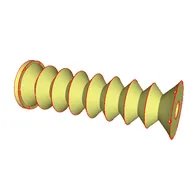
bellows
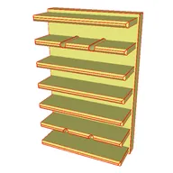
heat_sink
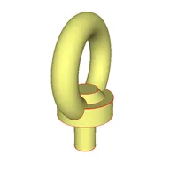
eyebolt
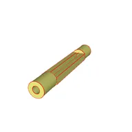
turnbuckle
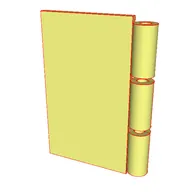
hinge
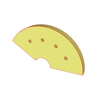
ratchet_sector
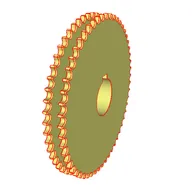
double_simplex_sprocket
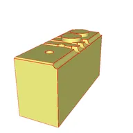
manifold_block
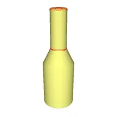
lathe_turned_part
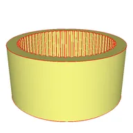
spline_hub
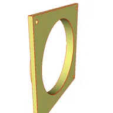
fan_shroud
BenchCAD is the first industry-grade CAD benchmark to cover the full spectrum of parametric CAD operations. Every family is a manufacturable part grounded in an ISO / DIN / EN specification, not a synthetic primitive, and each sample exercises a realistic construction history rather than a single extrusion. The registry spans 2D sketching (line, arc, circle, spline, polygon, rectangle), solid construction (extrude, revolve, sweep, loft), feature modification (fillet, chamfer, shell, draft, offset), boolean composition (union, cut, intersect), patterning (linear array, polar array, mirror), and fastener-specific features (hole, counterbore, countersink, thread / helix).
106 parametric families grounded in 54 ISO / DIN / EN specifications, each sample shipping ground-truth CadQuery, STEP, a multi-view composite render, and numeric QA pairs. Four parallel evaluation axes:
106
parametric families
54
ISO / DIN / EN standards referenced
Families span six industrial sectors: fasteners & hardware, motion & transmission, structural & mounting, fluid & process, panels & sheet metal, and enclosures & product parts.
Image → Code
CadQuery generation from a rendered part
Model sees a 2×2 composite render, outputs a CadQuery program. We re-execute, render, and score against GT via IoU (voxel 64³), Chamfer (2048 pts), and Feature-F1.
Image → QA
Visual numeric reasoning
Model answers numeric questions about the rendered part (hole diameter, fillet radius, counts, ratios). Scored by symmetric ratio accuracy.
Code → QA
Text-only numeric reasoning
Model reads ground-truth CadQuery source and answers the same numeric questions. Isolates code-understanding from visual perception.
Edit Code
Parametric edit from delta renders
Given original CadQuery plus a target render reflecting a 2–5% parameter delta, the model edits the code. We execute and score the edited geometry against the GT-edit via IoU / Chamfer.
Higher is better. Image → Code reports mean IoU; Image → QA / Code → QA / Edit Code report accuracy.
Preview results — frozen on a small held-out subset; full eval forthcoming.
| Model | Image → Code ↑ | Image → QA ↑ | Code → QA ↑ | Edit Code ↑ |
|---|---|---|---|---|
| Claude Opus 4.7 | 0.456 | 0.841 | 0.887 | 0.732 |
| Gemini 3.1 Pro | 0.388 | 0.782 | 0.824 | 0.691 |
| GPT-5.2 Pro | 0.355 | 0.748 | 0.801 | 0.654 |
To submit results, open a PR on the code repo (link withheld during review) with your results.jsonl.
@misc{benchcad2026,
title = {BenchCAD: A Synthetic CAD Benchmark for Vision-Language Models},
author = {Anonymous Authors},
year = {2026},
note = {Paper under double-blind review}
}